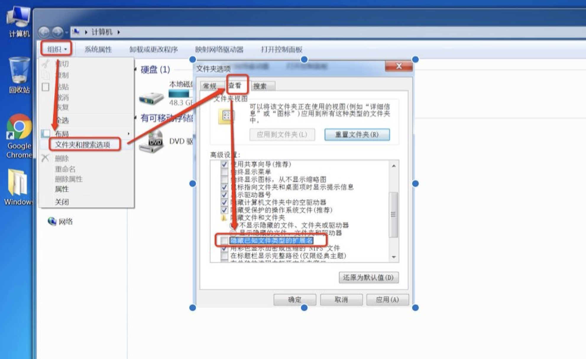
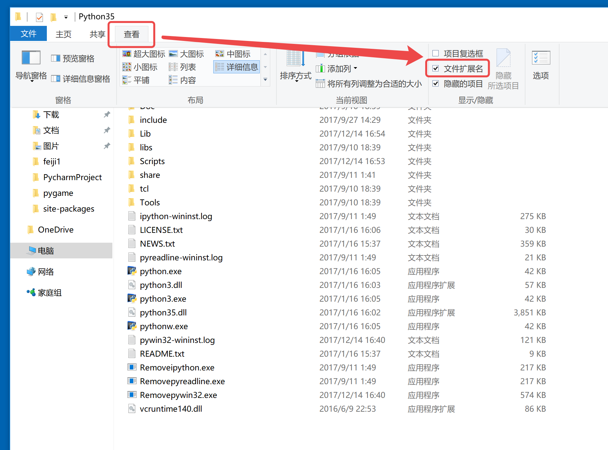

第一个 Python 程序
01. 第一个 HelloPython 程序
1.1 Python 源程序的基本概念
- Python 源程序就是一个特殊格式的文本文件，可以使用任意文本编辑软件做
Python的开发 - Python 程序的 文件扩展名 通常都是
.py
- 显示win7文件拓展名：

- 显示win10文件拓展名：

1.2 演练步骤
- 在桌面下，新建
Python基础1目录 - 在
Python基础1目录下新建hm_1_HelloPython.py文件 - 使用 记事本 编辑
hm_1_HelloPython.py并且输入以下内容：
print("hello python")
print("hello world")
- 在windows菜单中找到“运行”，输入
cmd，在黑窗口中输入以下命令执行hm_1_HelloPython.py
$ python3 hm_1_HelloPython.py
python中我们学习的第一个 函数
函数 表示一个功能，我们会在后面学习到，目前仅作了解即可。
1.3 演练扩展 —— 认识BUG
关于BUG
- bug 原意为 臭虫，在计算机领域，指 导致程序 不能正常执行，或者 程序的执行结果不是预期的 错误
BUG是程序员在开发时非常常见的，初学者常见错误的原因包括：- 手误
- 对已经学习过的知识理解还存在不足
- 对语言还有需要学习和提升的内容
- 在学习语言时，不仅要 学会语言的语法，而且还要 学会如何认识错误和解决错误的方法
每一个程序员都是在不断地修改错误中成长的，所以把遇到的所有错误整理搜集是我们开发人员的 日常习惯
第一个演练中的常见错误
- 1> 手误，例如使用
pirnt("Hello world")
NameError: name &apospirnt&apos is not defined
名称错误：&apospirnt&apos 名字没有定义
- 2> 将多条
print写在一行
SyntaxError: invalid syntax
语法错误：语法无效
每行代码负责完成一个动作
- 3> 缩进错误
IndentationError: unexpected indent
缩进错误：不期望出现的缩进
- Python 是一个格式非常严格的程序设计语言
- 目前而言，大家记住每行代码前面都不要增加空格
单词列表[仅作参考了解]
* error 错误
* name 名字
* defined 已经定义
* syntax 语法
* invalid 无效
* Indentation 索引
* unexpected 意外的，不期望的
* character 字符
* line 行
02. Python 2.x 与 3.x 版本的区别
目前市场上有两个 Python 的大版本并存着，分别是 Python 2.x 和 Python 3.x
新的 Python 程序建议使用
Python 3.0版本的语法
- Python 2.x 是 过去的版本
- 解释器名称是 python
- Python 3.x 是 现在和未来 主流的版本
- 解释器名称是 python3
- 为了不带入过多的累赘，
Python 3.0在设计的时候 没有考虑向下兼容- 许多早期
Python 2.x版本设计的程序都无法在Python 3.x上正常执行
- 许多早期
- Python 3.0 发布于 2008 年，目前最新版本是3.6.x
- 为了照顾现有的程序，官方提供了一个过渡版本 —— Python 2.6
- 基本使用了
Python 2.x的语法和库 - 同时考虑了向
Python 3.0的迁移，允许使用部分Python 3.0的语法与函数 - 2010 年中推出的
Python 2.7被确定为 最后一个Python 2.x 版本
- 基本使用了
03. 执行 Python 程序的三种方式
3.1. 文本模式
Python代码 保存在文件 中，解释器对文件逐行解释执行
在终端中输入解释器名，再输入要执行的文件名
# windows中使用 python 3.x 以文本模式执行python程序
$ python3 xxx.py
3.2. 交互模式
- 直接在终端中运行解释器，而不输入要执行的文件名
- 在 Python 交互模式 中 边输入边执行 Python代码，会立即看到程序执行结果
1) 交互式执行 Python 的优缺点
优点
- 适合于学习/验证 Python 语法或者局部代码
缺点
- 代码不能保存
- 不适合运行太大的程序
2) 退出 官方解释器 的 交互模式
1> 直接输入 exit()
>>> exit()
2> 使用热键退出
在 python 解释器中，windows按热键 ctrl + z,ubuntu按ctrl + c 可以退出解释器
3) IPython
- IPython 是一个 python 的 交互式工具，比官方默认送的
python shell好用得多- 支持自动补全
- 自动缩进
- 内置了许多很有用的功能和函数
- IPython 是开源免费的
版本
- Python 2.x 使用的解释器是 ipython
Python 3.x 使用的解释器是 ipython3
要退出IPython可以有以下两种方式：
1> 直接输入
exitIn [1]: exit2> 使用热键退出
在 IPython 解释器中，按热键
ctrl + d，IPython会询问是否退出解释器
3.3. Python 的 IDE —— PyCharm
1） 集成开发环境（IDE）
集成开发环境（IDE，Integrated Development Environment）—— 集成了开发软件需要的所有工具，一般包括以下工具：
- 图形用户界面
- 代码编辑器（支持 代码补全／自动缩进）
- 编译器／解释器
- 调试器（断点／单步执行）
- ……
2）PyCharm 介绍
PyCharm是 Python 的一款非常优秀的集成开发环境PyCharm除了具有一般 IDE 所必备功能外，还可以在Windows、Linux、macOS下使用PyCharm适合开发大型项目- 一个项目通常会包含 很多源文件
- 每个 源文件 的代码行数是有限的，通常在几百行之内
- 每个 源文件 各司其职，共同完成复杂的业务功能